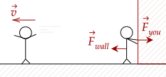
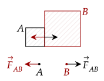
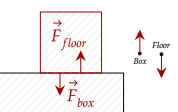
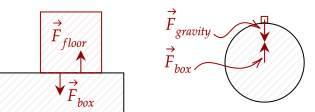
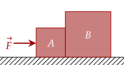
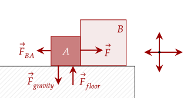
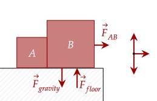

What do these three scenarios have in common?
Analyzing all three of these scenarios, you can note that there are two forces that are prevalent in each. The first scenario has the force of the box pushing on the floor, and the floor pushing on the box.

For the second scenario, when you exert a force on the wall, pushing on it. The reason why we go flying off is because the wall (counterintuitively) pushes you.

The third scenario also shows this phenomenon. The car pushes on the box, the box pushes on the car, destroying it.
These three scenarios are all connected by what is Newton's Third Law, sometimes called the Law of Action and Reaction or the Law of Interaction.
When an object exerts a force on another object , the other object exerts a force of the same magnitude and opposite direction on object .

No force works alone; they always work in these pairs, sometimes called action-reaction pairs. This gives us the other, more famous way of stating Newton's Third Law.
For every action, there is an equal and opposite reaction.
One flaw of this statement is that it implies that a reaction occurs because of an action. In reality, the reaction and action are interchangable; one doesn't cause the other.
It does show one part of the definition though. "equal and opposite" means that their magnitude is the same, but in the opposite direction. We can write it like this.
The rope pulls the team towards the other team (courtesy of the other team pulling the rope). With this, they need to resist this force. To do this, they have to push hard on the ground. By the Law of Interaction, the ground pushes hard on them, which pushes them backward.
If the force from the ground beats out the force of the rope, the team effectively accelerates backwards, which will lead to victory.
You can use Newton's third law to escape. Using the shoes you have, you can throw one of them in the opposite direction of where you want to go. As you exert a force on the shoe to throw it, the shoe exerts a force on you, pushing you towards freedom.
One may be confused with the third law and one of its implications. If a force exerted on an object has an equal and opposite reaction force, shouldn't that mean they both cancel out?
This conclusion is incorrect. This is best shown with two free body diagrams.

The action and reaction force act on separate bodies. In other words, they can't cancel out because they don't act on the same body.
Another misconception with the above is that the pull of Earth on the box is the reason the floor pushes up on the box. This is wrong. The correct pair would be that the box pushes on the floor, and the floor pushes on the box.

How about the other force we noted; the Earth pulling on the box? The pair of that force is that the box pulls the Earth. This sounds counterintuitive, but is true.
The horse is acting under the wrong notion that the force it exerts on the wagon (pulling forward) and the force the wagon exerts on it (pulling backward) both act on the wagon.
In reality, the horse pulling on the wagon acts on the wagon, while the wagon pulling on the horse acts on the horse.
The force acting on the ship from the shell has the same magnitude as the force that the ship acted on the shell. Thus, we get the net force of the artillery shell first.
This gives us the net force is 26400000 = N. The force thus on the ship is the same as this force, but in the opposite direction: N.
With the Law of Interaction, we can draw more complicated free body diagrams. Recall that we have to note every force acting on the object; thus, it is best to slow down and note each contact force.

The boxes both exhibit the force pulling them towards the Earth and the force the floor pushes up on them, so we should include that.
Then, the left box is pushed by a force. We include that. Then, the left box pushes on the right box. By Newton's third law, the right box pushes back on the left box. This gives us four forces to draw, shown below.

The right box is pushed by the force of the left box on the right box. There are no other forces.
